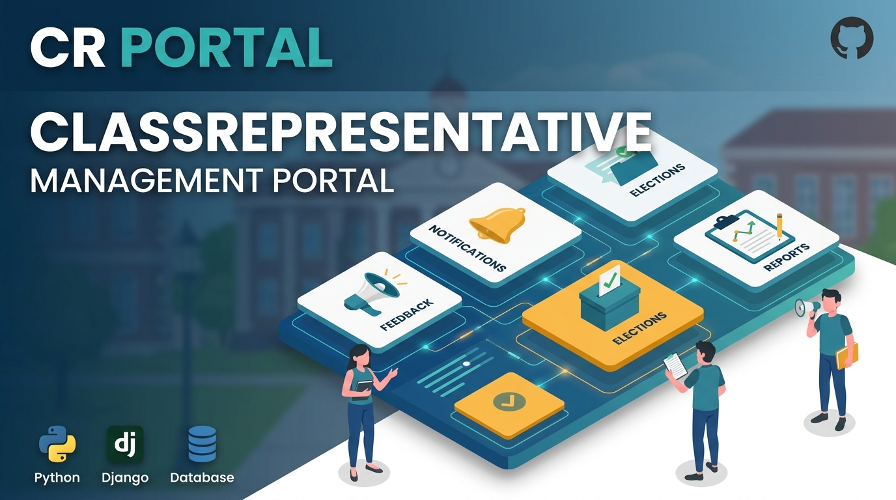

Data Analytics & Machine Learning
Advanced analytics solutions leveraging machine learning, statistical modeling, and data visualization to drive business decisions
Healthcare 30-Day Readmission Prediction
End-to-end healthcare analytics project using the Diabetes 130-US Hospitals dataset. Built data audit, cleaning pipeline, EDA, hypothesis testing, ML model comparison, and deployed Flask risk prediction app for operational use.

E-Commerce Customer Churn Prediction
Built churn prediction models on imbalanced customer data (16.8% churn rate), where 52% churner recall and AUC 0.88 are more decision-useful than raw accuracy. Identified key churn drivers including early tenure (0-3 months), customer complaints, and cashback behavior. Published comparison focuses on Decision Tree vs Logistic Regression baselines, with boosting models planned as next-step benchmarks.

SRC Class Rep Portal (Organization Deployment)
Delivered as a real operational handover project for SRC, not a classroom demo. It automated 80%+ recurring tracking workflows, reduced communication preparation time by about 70%, centralized class rep records in one dashboard, replaced manual multi-sheet steps, and improved continuity for future SRC teams.